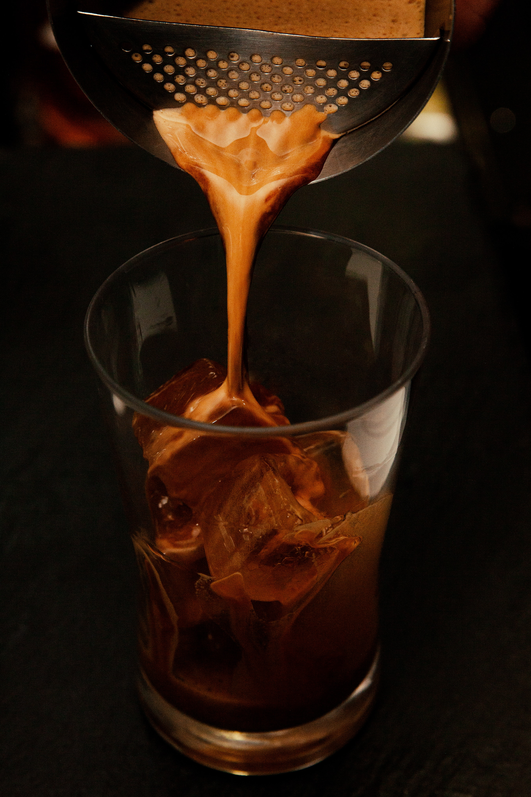
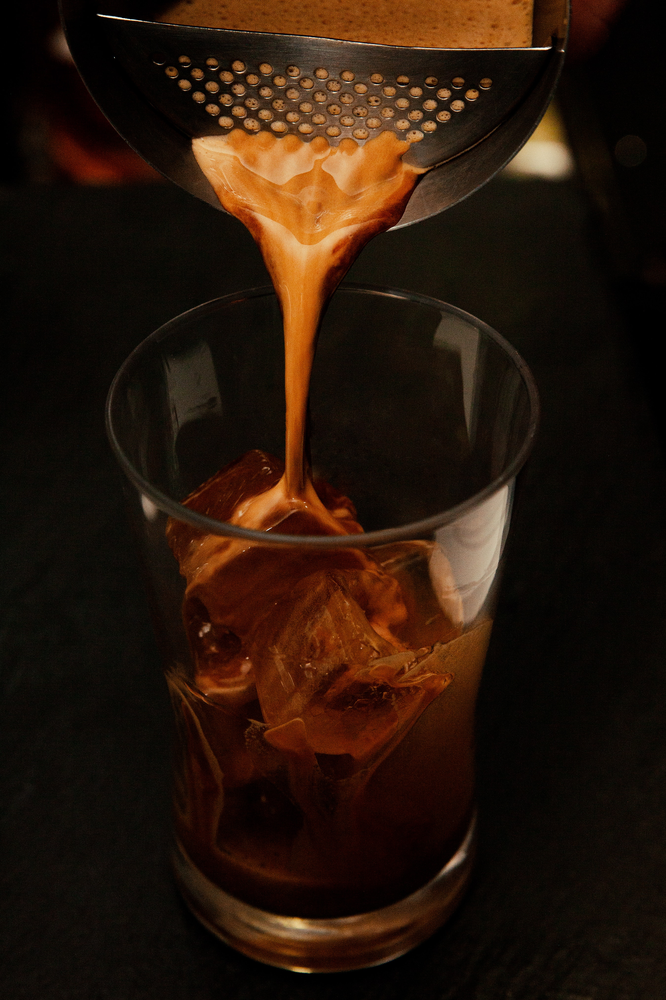

First flung open its doors on a cold winter’s morning back in January 2011. Brimming with enthusiasm and hope along with a few crossed fingers the months soon rolled by, with signs that we were doing something right (we shall selflessly gloss over any alleged mistakes that may have been made).
We have four locations in the South West of England. One cafe and bakery in Bristol and two shops in Bath and one in Portishead.
 


BRISTOL Mokoko Coffee & Bakery 2 Gaol Ferry Steps, Wapping Wharf, BS1 6WE Google maps Phone 0117 929 0177 Opening Monday to Sunday, 9.00am to 4.00pm
PORTISHEAD Mokoko Coffee Sixty8 At The Marina, Newfoundland Way, Bristol BS20 7PT Google maps Phone 01275 845620 Opening Monday to Sunday, 9.00am to 4.00pm
BATH Mokoko Coffee 6 Abbey Churchyard, Avon, Bath, BA1 1LY Google maps Phone 01225 758132 Opening Monday to Sunday, 9.00am to 4.00pm